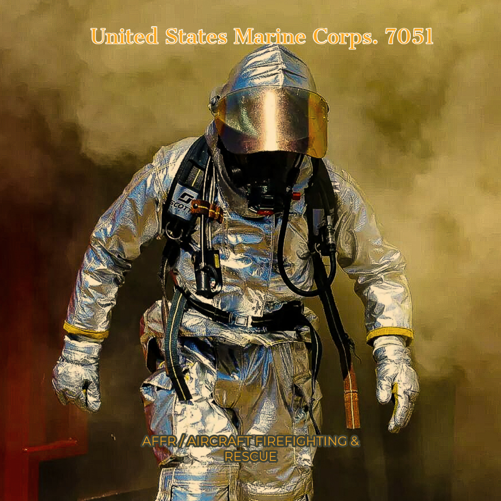

Michael started his journey in life as a United States Marine at the age of 18 where he served for 6 years honorably, as a Marine Michael learned and honed his leadership skills. While serving in The United States Marine Corps, Michael was a first responder (Aircraft Firefighter). While combining his leadership skills and firefighting skills, Michael was able to lead young men into face of fear with confidence and knowledge. Michael attribute this ability to his passion for learning. Michael believes it's through learning that we gain knowledge to achieve and succeed.
Due to a career changing injury Michael moved on from being a first responder (firefighter). Michael transitioned into The Transportation and Logistics Field where Michael has 30 years of service in many facets of the transportation industry, from driver to General Manager of a small to medium trucking company. Michael has also served as a union steward for drivers, logistics manager, office manager, and Michael is a certified master transportation broker.
Michael is the proud father to a son and a daughter and extremely proud grandfather to 8 wonderful grandchildren. Michael’s passion for education has spilled over to his children and grandchildren. Emphasizing education is a big part of Michaels relationship with his family. Michael is from Chicago and Chicago sports is a big part of Michael’s fun time life. Watching The Chicago Bears, White Sox, and Chicago Bulls is just not a hobby for Michael, it was a big part of his childhood growing up in Chicago.
Michael has a whole host of training and education in the Transportation and Logistics industry, but Michael since he was a pre-teen has had a passion for technology. Michael holds an Associate Degree in Computer Network & Technology(Cisco Systems) from Glendale, Arizona Community College. Michael is now attending Phoenix Computer Academy studying Web Development. Michael has aspiration to one day achieve the title of Full Stack Web Developer. Michael is not bothered or intimidated by his age, this will not diminish his passion for learning and achieving.